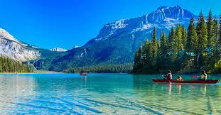

Los meses de marzo y abril son la época ideal para viajar a Japón para hacer el hanami, ver la floración de los cerezos en su máximo esplendor.
La floración de estos árboles dura alrededor de una semana, por lo que es muy importante saber el comportamiento de los árboles, con base en el estado del tiempo en los diferentes puntos del país.
Para poder monitorear el florecimiento de los árboles, lo mejor es entrar a la página de la Agencia Meteorológica de Japón, la cual muestra las fechas de la floración de las sakuras, en las principales ciudades niponas.
También se puede seguir el pronóstico de la Corporación Meteorológica de Japón, una empresa privada que suele ser de los primeros en publicar las fechas de floración, sin embargo no está reconocida oficialmente.
También, la Corporación Meteorológica de Japón lanzó una aplicación llamada Sakura Navi, en la que se puede monitorear el estado de las sakuras y su florecimiento.
De acuerdo con la última actualización (23 de febrero de 2023) de la Agencia Meteorológica de Japón, la floración iniciaría el 19 de marzo en Fukuoka y Kochi.
A continuación les compartimos un cuadro con las principales ciudades de Japón y las fechas en las que las sakuras estarán en su floración, de acuerdo con la Agencia Meteorológica de Japón.
Thailand
A partir del 1 de junio de 2023, Tailandia cobrará un nuevo impuesto de llegada a los viajeros internacionales que visiten el país.
De acuerdo con información de Bangkok Post, la nueva tarifa de entrada vía aerea sería de 300 baht tailandeses (alrededor de 8,75 dólares) y de 150 baht (4,35 dólares ) para los viajeros que lleguen por tierra o mar.
Los ingresos generados por la tarifa se utilizarían para financiar la gestión sostenible de los recursos turísticos de Tailandia y cubrir el seguro de accidentes para los turistas que no pueden pagarlo, indicó por su parte el Ministerio de Turismo del país.
China
La Muralla es una de las atracciones más visitadas de China y desde que fue nombrada como una de las Nuevas Maravillas del Mundo, su popularidad ha ido creciendo.
Sin embargo, debido al gran aumento de visitantes diarios en la sección Badaling, en Beijing, las autoridades locales implementaron limitar las visitas a 65,000 viajeros diarios, a partir de este mes de junio.
Además, se creará un sistema de advertencias de tres grados que indicará el nivel de congestión de esta sección. Habrá tres tipos de señales, amarilla, naranja y roja. La amarilla indicará cuando se haya llegado a 39,000 visitantes en un día; la naranja a 52,000 mil y la roja cuando se alcance los 65,000 visitantes.
También se creó un nuevo sistema de boletos en línea, tanto en la página oficial de Badaling como en la página oficial de Wechat.
Europa
Italy
Italia tiene una impresionante arquitectura, comida inolvidable, paisajes de ensueño y ¡grandes multitudes en sus ciudades más populares!, tanto que lugares como Venecia han considerado imponer un impuesto especial a los visitantes.
Ante esta situación, la región de Friuli-Venezia Giulia, al norte del país entre Austria y Eslovenia, ofrecerá por tiempo limitado algunas facilidades a sus visitantes para incentivar su turismo.
La junta de turismo local ofrecerá a sus visitantes la posibilidad de redimir sus pasajes para animarlos a explorar sus maravillas, entre las cuales están los montes Dolomitas. La campaña estará vigente hasta el 31 de mayo de 2023 e incluye lo siguiente:
Se hará un reembolso de todos los viajes en tren que tengan como destino las ciudades de Trieste, Údine, Grado y Lignano Sabbiadoro.
Se proporcionará una FGVcard gratuita, una tarjeta con acceso gratuito al transporte público y a varios museos por 48 horas.
France
Viajar a Francia siempre será una buena idea, constantemente tiene cosas nuevas para mostrar a los viajeros y nunca está de más regresar a esos lugares especiales que tiene este país.
Así que en esta ocasión les compartiremos algunas de las novedades que tiene Francia para este 2023.
En 2022 Francia vivió la apertura de varias atracciones para los viajeros y locales, por lo que son un buen pretexto para visitar este país:
19M
Este es un nuevo espacio en París; trata de un lugar de trabajo y encuentro dedicado a los Métiers d’Art u oficio de la moda, que imaginó CHANEL. Este edificio, diseñado por el arquitecto Rudy Ricciotti, acoge once Maisons d’Art y una escuela de bordado, con más de 600 artesanos, empleados y aprendices.
Spain
España está lleno de lugares que simplemente te llenan de asombro, así sin más. Lugares que te intrigan y seducen al momento. Por mencionar algunos, tenemos la Plaza de España en Sevilla, la Sagrada Familia en Barcelona, la Alhambra en Granada y la Gran Mezquita de Córdoba. Sin embargo, hoy les vengo a hablar de un lugar que, quizá, el turista no haya marcado en su lista de sitios por visitar, y quizá, el viajero, en su interminable búsqueda del Ser, sea gustoso de encontrar parte de su luz reflejada en el majestuoso Puente Nuevo de la increíble ciudad de Ronda.
América
United States
A partir del próximo 30 de mayo de 2023, la Visa para entrar a Estados Unidos de América tendrá un aumento de precio, informó el Departamento de Estado de ese país.
Tras casi 9 años de costar 160 dólares (cerca de de 2,923 pesos) el visado por negocios o turismo (B1/B2 y BCC), su nuevo importe será de 185 dólares (aproximadamente 3,380 pesos mexicanos).
Asimismo, se refirió que la tarifa las visas de no inmigrante basadas en peticiones para trabajadores temporales (categorías H, L, O, P, Q y R) aumentará de $190 a $205. La tarifa para comerciantes e inversionistas (categoría E) aumentará de $205 a $315.
Mexico
Recorrer un país en coche es una muy buena opción, pues permite conocer y explorar lugares poco comunes, además de poder moverse a su ritmo; y hacerlo en México puede ser una excelente idea.
Así que en esta ocasión les compartiremos algunos consejos que les serán de mucha ayuda para hacer un road trip por algún lugar o zona de México.
Conductores extranjeros
Para poder manejar en México los conductores extranjeros necesitan:
Tener un permiso de conducir vigente
Pasaporte o identificación oficial que incluya fotografía
Si planean rentar un coche necesitarán:
Permiso de conducir vigente
Pasaporte
Tarjeta de crédito
Pagar el “Derecho de Visitante sin permiso para realizar actividades remuneradas” (DNR).
Quedarán exentos al pago del DNR si:
Tienen una estancia menor a 7 días e ingresan vía terrestre bajo la condición de estancia “Visitante sin permiso para realizar actividades remuneradas” con motivo de viaje de turismo, negocios u otro, en caso de exceder los 7 días se cobrará el derecho correspondiente al salir del país.
Acreditan cualquier condición de estancia distinta a la de “visitante sin permiso para realizar actividades remuneradas” como lo son trabajo fronterizo, con fines de adopción, residente temporal o permanente en México.
Para poder pagar el DNR en caso de ingresar al país vía aérea en vuelo comercial la empresa de transporte realizará el cobro dentro del costo del boleto. Existen tres diferentes maneras de poder realizar el pago:
Vía internet:
Ingresen a la página del Instituto Nacional de Migración: https:// www.inm.gob.mx/fmme/publico/solicitud.html
Llenen el formulario y paga la Forma Migratoria Múltiple (FMM) vía electrónica mediante tarjetas de débito o crédito autorizadas a través del portal bancario al que se te direcciona; en este caso, no es obligación presentar el recibo de pago ante la autoridad migratoria.
Canada
Canadá es uno de los mejores países del mundo para ver este espectáculo, gracias a su ubicación, sin embargo los Territorios del Noroeste son quizá el mejor lugar para observarlo, de hecho se dice que se pueden ver durante ¡240 noches al año!
Los Territorios del Noroeste se encuentran al norte de las provincias de Alberta y la Columbia Británica, entre Yukón y Nunavut; su capital es Yellowknife y aunque para llegar a ella será necesario hacer por lo menos una escala en Vancouver, o una más en Alberta, Edmonton o Calgary, valdrá totalmente la pena.
Los Territorios del Noroeste son uno de los mejores lugares del mundo para ver auroras boreales porque en este lugar las luces ofrecen colores mucho más brillantes, los avistamientos son más largos y sus movimientos más impredecibles que en otras partes del planeta. Esto se debe a que el subártico canadiense ha sido beneficiados con noches cristalinas, baja humedad y una ubicación perfecta, directamente debajo de la banda de máxima actividad auroral del planeta.
